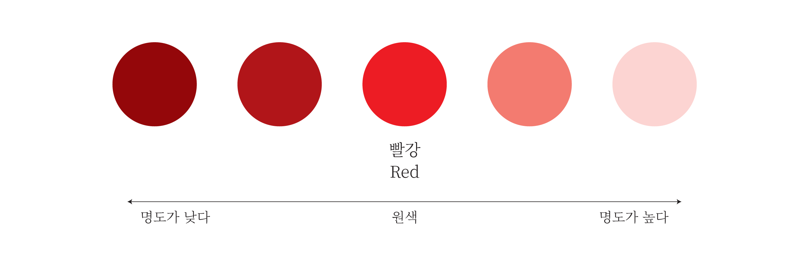
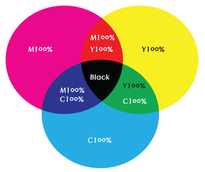
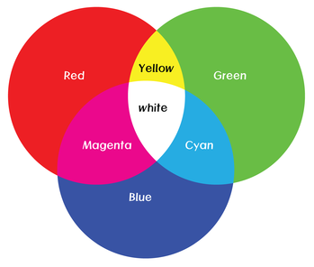

빨강·파랑·녹색이라는 이름 등으로 서로 구별되는 특성을 말한다.
색조와 거의 같은 뜻으로 쓰이는데, 색상의 변화를 계통적으로
고리 모양으로 배열한 것이 색상환(色相環)이다. 색상환은
마주보는 자리에 보색이 나타나며, 보색 간의 조화를 알아두면
세련되게 색상을 선택할수 있다.
명도(Value):
물체의 색이나 빛의 색이 지니는 밝기의 정도를 말한다.
광도(光度)라고도 한다. 색을 구별하는 감각적인 요소 중 하나로
눈이 느끼는 밝기에 의존하기 때문에 그 물체 자체의 명도보다는
주변에 있는 사물과 비교했을 때 갖는 명도가 더 확실하게 영향을
미친다. 이를 이용하여 주의 표지판 등을 만들 때에는 잘 보여질
수 있도록 명도 차이가 크게 나도록 만든다. 명도가 높을 수록
밝은 색상을, 명도가 낮을수록 어두운 색상을 가리킨다. 명도는
어두운 검은색을 더할 수록 낮아지며, 명도에 따라 같은
색상이라도 전혀 다른 분위기를 나타낸다.

채도(Saturation):
색상읜 선명도는 나타내는 채도는 명도 (Brightness), 색상
(Hue)와 함께 색의 3대 속성 중의 하나이며, 색의 순수한 정도를
나타낸다. 일반적으로 채노가 높으면 ‘선명하다’라고 표현하고
채도가 낮을수록 ‘탁하다’라고 한다. 채도는 색상(순색)에
무채색을 섞는 양에 따라 무채색의 비율이 많을수록 낮아진다.
인쇄, 출력에서 사용하는 색상 모드로 Cyan(밝은 파랑),
Magenta(자홍), Yellow(노랑), Black(검정) 을 혼합한 방식.
물감을 섞어서 만드는 혼합 방식으로 이해할 수 있고, 색상을
섞을수록 어두워진다.

RGB 모드:
빛의 삼원색인 Red, Green, Blue의 세 종류의 광원을 이용하여
색을 표현하는 방식으로 색을 혼합할 수록 빛이 밝아진다.
RGB모드는 컴퓨터에서 사용하는 기본 색상 체계로 모니터나
태블릿 PC 또는 핸드폰 화면의 생상 체계를 말한다.

Lab 모드:
모니터와 인쇄기의 색상 차이를 최대한 보완하기 위해 만든 색상
체계 표준화로, 국제조명위원회에서 발표한 색상 체계. CMYK와
RGB의 색상범위를 모두 포함한다. 보통 CMYK로 변환할 때
탁해지는 느낌을 방지하기 위해 Lab색상으로 변환 후 CMYK로
변환하기도 한다.
GrayScale 모드:
GrayScale 모드는 색상 정보를 뺀 개념으로 흰색과 검은색
사이의 음영으로 구성된 모드이다.
지나치게 많은 색을 사용하면 조화롭지 못하고 어지럽다. 사용할
색상의 범위를 좁히고 색상환에서 가까운 색끼리 조합할수록
조화로운 결과로 얻을 수 있다.
유사 대비:
비슷한 색끼리의 조합을 유사대비라 한다. 동일한 색에서 밝기를
달리하거나, 색상환에서 가까운 색끼리 조합하면 좋다.
보색 대비:
보색은 색상환에서 서로 마주보고 있는 색을 말한다. 마주보고
있다는 것은 색의 대비가 가장 크다는 것을 의미한다. 이렇게
대비가 큰 보색을 적용하면 정보들을 눈에 띄게 보여줄 수 있다.
그러나 과도한 대비는 시각적인 잔상을 일으켜 눈에 피로를 줄수
있어 주의해야한다.
명도 대비:
명도대비는 같은 색상에서 밝거나 짙은 색상을 사용하여 서로 다른
요소들을 구분짓게 한다. 명함은 시각적으로 뚜렷한 구분을 짓게
하고, 명도 대비는 독자에게 친숙하게 접근하고 편하게 다가갈 수
있다. 단 지나치게 명도 대비가 크면 시선이 분산될 수 있다.
특정 주제 색상:
특정한 주제가 연상되는 컬러는 사용하지 않는 것이 좋다. (ex:
빨강,녹색-크리스마스)
색상 계획:
색의 대한 계획 없이 즉흥적으로 색을 사용하면 색으로 인한 의미
전달이 떨어질 수 있다. 또한 배경과 디자인 요소들이 뒤엉켜 색상
간의 충돌을 막기 어려우며 색의 전달력이 떨어질 수 있다.
그러므로 처음부터 새제대로 된 색상 계획을 세워야 한다.
색상계획은 주조색과 보조색을 선택하고 색상 팔레트를 만들어야
한다.
색의 의미 및 상징:
색은 우리의 의식 속에서 많은 연상 작용을 일으킨다. 색의 연상은
문화와 환경 또는 경험에 따라 다르겠지만, 일반적으로 연상되는
동일한 이미지를 갖고 있다. 색에 따라 담고 있는 의미를 알고
적절한 색을 선택해서 정보를 전달해야 한다.